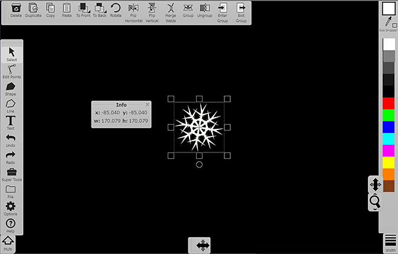
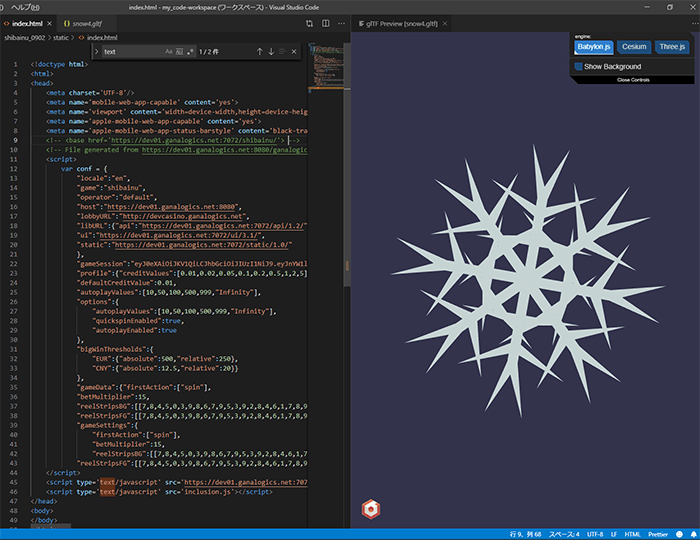
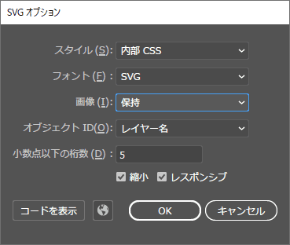

PixiJS +
Script animation + vector graphics image.
.svg(illustrator) -> .glb(Omber)
use image(snow4.glb)
Omber

glTF Tools Extension(Visual Studio Code)

Illustrator output option(Illustrator ver. 23.0.6)
